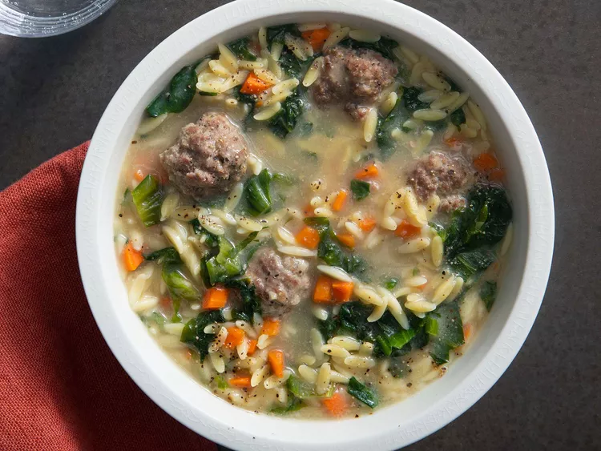

Italian Wedding Soup

Description
There's nothing like a hot bowl of soup to help keep things cozy in wintertime.
This Italian wedding soup with homemade meatballs and orzo pasta does the trick.
And since it's so hearty, you dont even have to serve it with anything (except some bread, of course).
Ingredients
- ½ pound extra-lean ground beef
- 1 large egg, lightly beaten
- 2 tablespoons dry bread crumbs
- 1 tablespoon grated Parmesan cheese
- ½ teaspoon dried basil
- ½ teaspoon onion powder
- 5 ¾ cups chicken broth
- 2 cups thinly sliced escarole
- 1 cup uncooked orzo pasta
- ⅓ cup finely chopped carrot
Steps
- Combine ground beef, egg, bread crumbs, Parmesan cheese, basil, and onion powder in a bowl.
- Shape beef mixture into 3/4-inch balls and place on a parchment-lined tray.
- Heat broth in a large pot over medium-high heat until boiling. Stir in escarole, orzo, carrot, and meatballs and return to boil. Reduce heat to medium and cook at slow boil, stirring frequently to prevent sticking, until pasta is tender yet firm to the bite, about 10 minutes.
- Serve hot and enjoy!